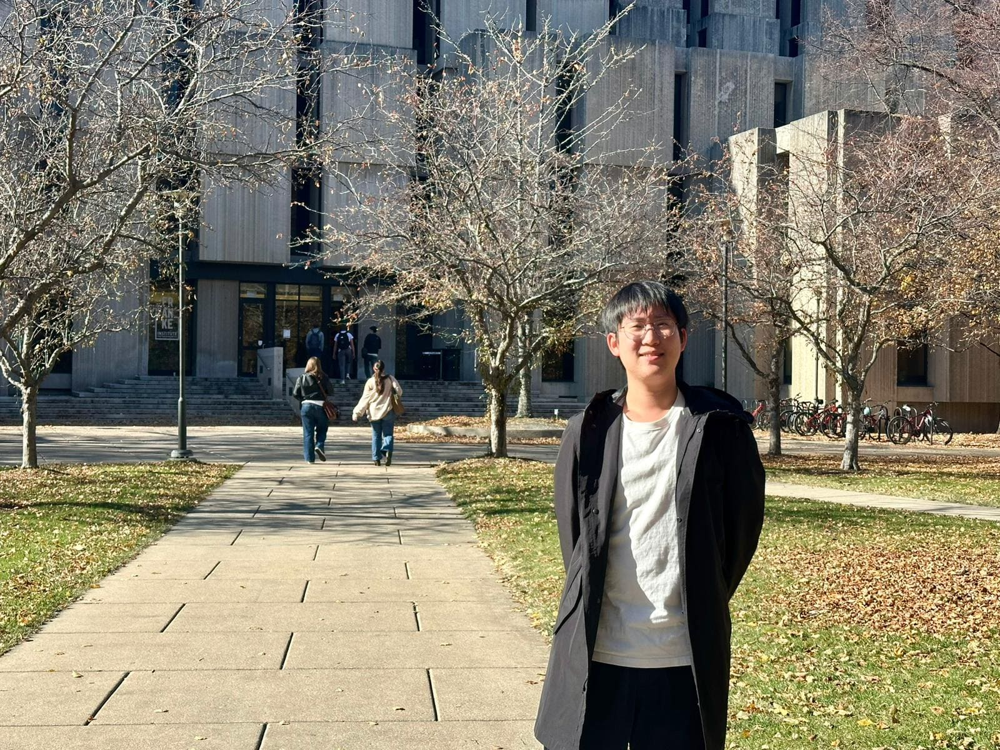
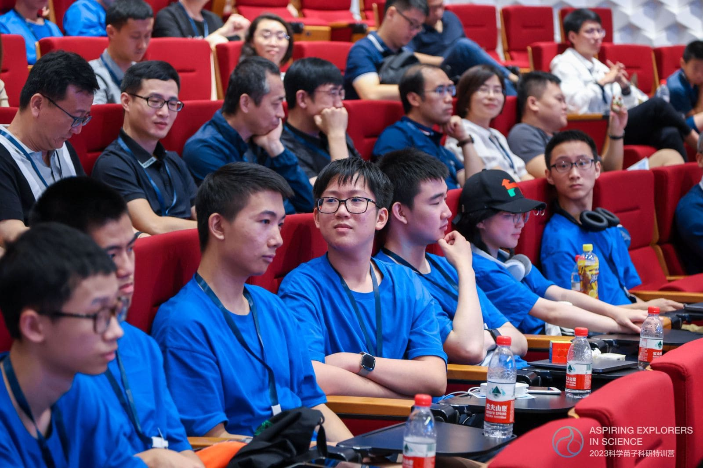
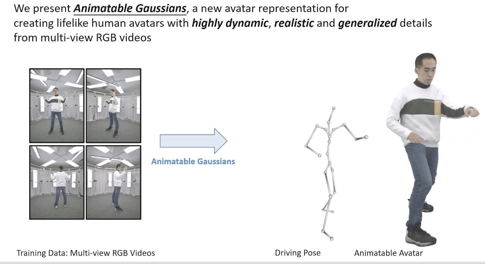
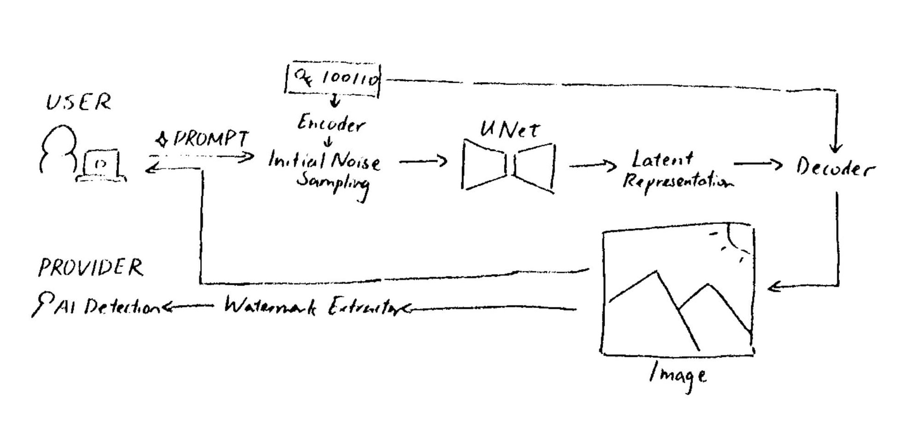

Hank Qiu

My name is Hank and I'm currently a first year student at the University of Chicago, intending to major in computer science and economics. I like these areas because I'm generally a stem oriented person, therefore it's very interesting to apply this to real life problem solving. Well, the honest answer right now is I'm not even completely sure that I will be majoring in these. Although that's the most likely one right now. Maybe in an alternate universe, I'll be studying art.
1. I don't hate research and AI machine learning is more accessible than I thought — even to ordinary high schoolers like me.
2. It’s interesting to fine-tune models and try new ways to use existing literature and methods to come up with our own to beat the existing literature.

Hank in Aspiring Xplorers Science Program @ Tencent

Developing Animatable Gaussians @ NNKosmos
It sounds at least 80% real, and if you're not familiar with someone’s voice, it’s hard to tell the difference. That’s why you should be careful about giving your audio files to others. Once someone has enough pictures and videos of you, they can make any video they want.
There's a lot of positive aspects that are brought by AI for our generation. Although AI reliance is a thing, a minority of people are harmed by it. Proper governance or AI safety is necessary, but I think there's a good share of users that are benefiting from it and you can see the productivity boost quite clearly with how quickly new apps and new elements are being developed.
Even if they're vibe-coded, if it works as a prototype, there must be some value right? If you can automate that process, why not?
At a minimal level, you need consent to carry an AI of anyone. With deepfaking, it's getting to the point where it's hard to tell the difference – even for experts in the field. Some of the mainstream models, for example, Google's Nano Banana and Veo models have SynthID watermarking in every single piece of media that they generate. With this, you’ll always know if it was completely, partially, or not created by AI. But you can also always run open source models that don't have these watermarks.

Qiu, Hank. 2026. Watermarking scenario overview for Gen-AI
One of the projects I'm working on right now is for the Economic Policy Institute at the UChicago chapter of the Charles River Economic Labs. We’re creating a simulation to model the impact of implementing paid family and medical leave in the US, especially in the southern states, because the US is one of the only OECD countries without it [Laughs]. Some states have already implemented it, but most still have not.
It’s important to improve accessibility of technology, especially for those with no internet or computer access. Distributing technology more widely could make an impact on fighting poverty and spreading opportunity. In the Aspiring Xplorers Science Program at Tencent, we did charity work using an AI model to detect hearing impairments. We went into the community, and people came to test whether they had hearing issues or not.
Aspiring Xplorers Science Program @ Tencent

DATE: NOV 9, 2025
I've known Hank since 9th grade, but mainly through a shared bond with an insufferable English teacher in 10th grade.
He's been universally known as the leading competitor of AI chatbots, which has been quite handy when figuring out how to do this whole website.
No seriously I don't think I would've been able to complete this website without asking Hank like 10 very Google-able questions a week.